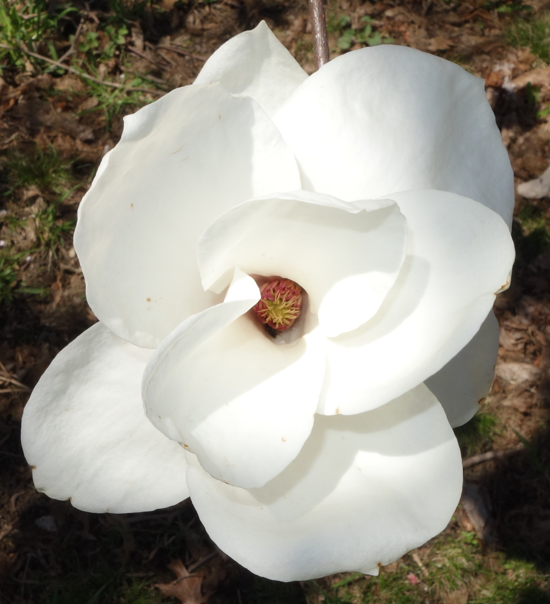
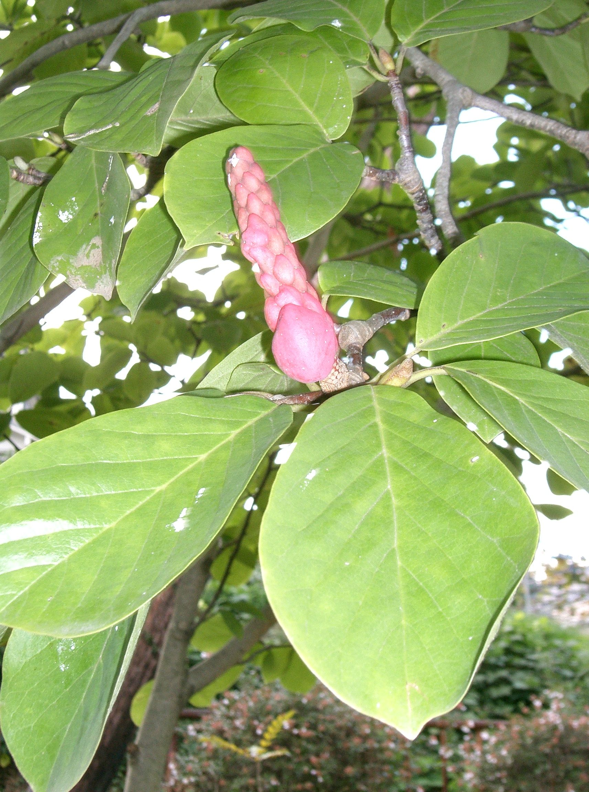

树形舒展
园林栽培中常形成开展的圆形树冠，也可能呈大型多干灌木状。
早春枝头的白色信号
白玉兰通常指玉兰、望春玉兰一类白花木兰。这里按常见园林植物 Magnolia denudata Desr. 介绍：它花大而洁白，常在叶片展开前开放，是很多城市里最醒目的春天标志。

从分类到观赏价值，白玉兰的身份可以用几个关键词快速建立起来。
白玉兰的辨识点集中在早春、白花、直立、先花后叶这几个特征上。
园林栽培中常形成开展的圆形树冠，也可能呈大型多干灌木状。
花朵白色至乳白色，有香气，多在枝端向上开放。
晚冬或早春开花时，枝条上常还没有展开的新叶。
叶片深绿色，倒卵形至长圆形，叶背颜色通常更浅。
花后可形成褐色聚合果状果序，成熟后能见到鲜红色种皮的种子。
看花、看枝、看果，是认识白玉兰最直观的方式。

白玉兰既是一种植物，也是一种被城市文化持续赋义的春日意象。
白玉兰原产中国，是东亚园林中历史悠久的观赏植物。北卡州立大学植物资料称其在中国栽培历史很长，并于 18 世纪传入西方园林。
它喜欢全日照至半阴环境，适合湿润、排水良好、富含有机质且略偏酸性的壤土。栽培时应避免长期干旱、积水和强风，早春花期也容易受晚霜影响。
在城市公园或街边看到白花木兰时，可以从以下角度快速判断。
如果在晚冬至早春，叶片还没展开，枝头已经布满大型白色直立花，就很符合白玉兰的典型观感。
白玉兰常见于庭院、公园、道路绿化和校园。开阔、有光照、土壤排水好的地方更容易长势良好。
页面内容整理自植物数据库、园艺资料、上海市公开信息与 Wikimedia Commons 图片资料。